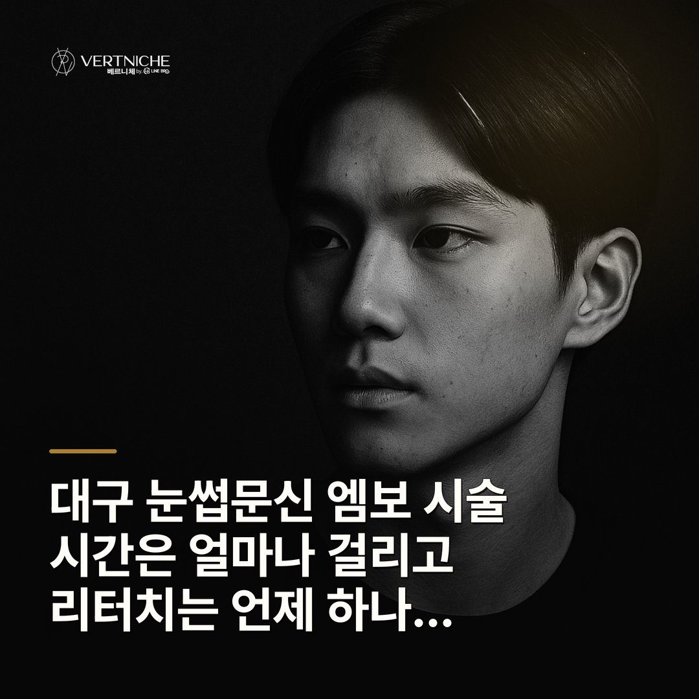

대구 눈썹문신 자연스럽게 고르는 법

- 엠보가 뭐길래 시간이 궁금한 걸까
- 시술 당일, 시간이 이렇게 흘러가요
- 리터치는 왜 필요하고, 언제 하는 걸까
엠보 눈썹문신이 얼마나 걸리는지, 리터치는 언제 잡는 게 맞는지 7년 운영 기준으로 정리했어요.
엠보가 뭐길래 시간이 궁금한 걸까
엠보는 기계로 색을 넣는 방식이 아니라, 얇은 날로 결을 한 올씩 그어 넣는 수기 방식이에요. 실제 눈썹처럼 한 가닥씩 선을 심는 거라, 가까이서 봐도 자연스러운 결이 나오는 게 장점이죠.
시술 당일, 시간이 이렇게 흘러가요
당일 전체를 보면 한 시간 안팎으로 잡으시면 돼요. 근데 이 한 시간이 바늘 대는 시간만 말하는 게 아니에요.
리터치는 왜 필요하고, 언제 하는 걸까
엠보는 결을 얕게 심는 방식이라, 첫 시술 때 넣은 선이 회복 과정에서 부분부분 연해지는 경우가 있어요. 다 고르게 남으면 좋은데, 피부 특성상 어떤 결은 진하게 남고 어떤 결은 흐릿하게 빠지기도 하거든요.
리터치, 착색 잘 됐으면 굳이 안 해도 돼요
리터치가 포함이라고 해서 무조건 오셔야 하는 건 아니에요. 실제로 제가 겪어보면, 첫 시술에서 착색이 잘 잡히는 분은 10명 중 8~9명이에요.
자주 묻는 질문
엠보랑 콤보(반영구)랑 시간 차이가 많이 나나요?
엠보는 결을 한 올씩 심는 방식이라 면을 채우는 방식보다 손이 더 가는 편이에요. 다만 전체 당일 일정은 상담·디자인·진정 시간이 대부분을 차지해서, 체감상 큰 차이가 나진 않아요. 한 시간 안팎으로 잡으시면 됩니다.
직장 다니는데 시술 후 바로 출근해도 되나요?
당일 출근 자체는 가능해요. 다만 시술 직후엔 결이 또렷하게 보이고, 2~4일차엔 색이 더 진해지는 구간이라 이 흐름을 미리 아셔야 당황을 안 해요. 딱지 생기는 5~7일차만 물이랑 땀 조심하시면 일상생활엔 큰 지장 없어요.
리터치 안 오면 손해인가요?
아니에요. 착색이 잘 됐으면 안 오시는 게 오히려 자연스러운 결과예요. 포함이라 아깝다는 생각에 굳이 진하게 덧대면 나중에 빼기가 어려워요.
요약입니다. 사례와 사진이 있는 전체 글은 네이버 블로그에서 볼 수 있습니다.